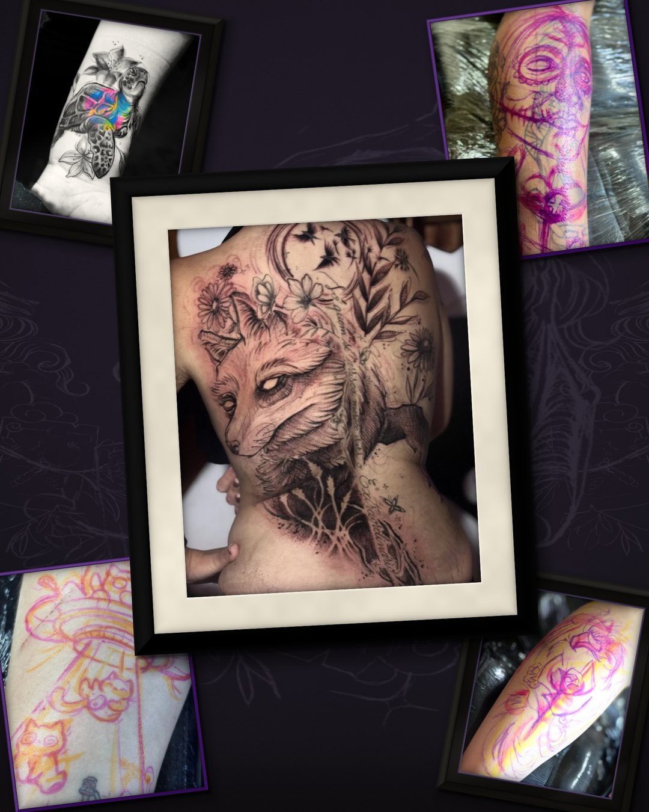
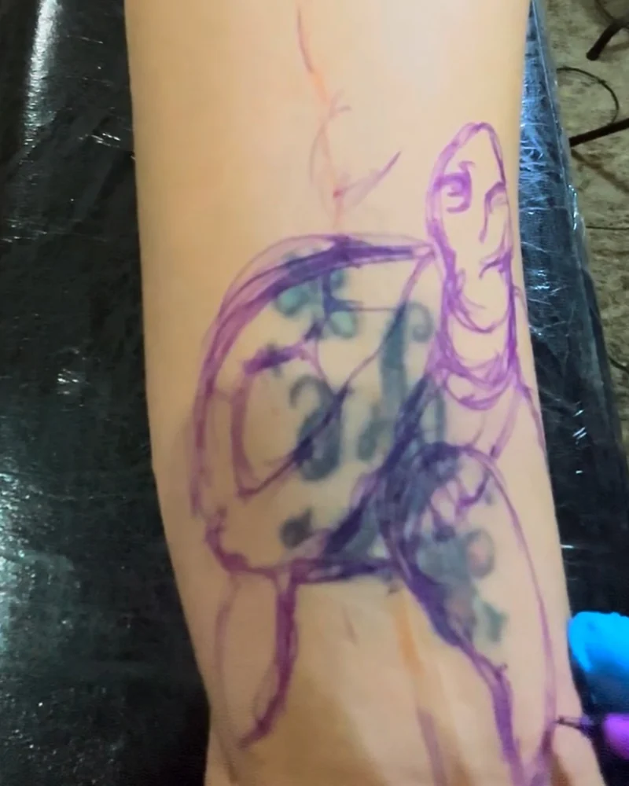
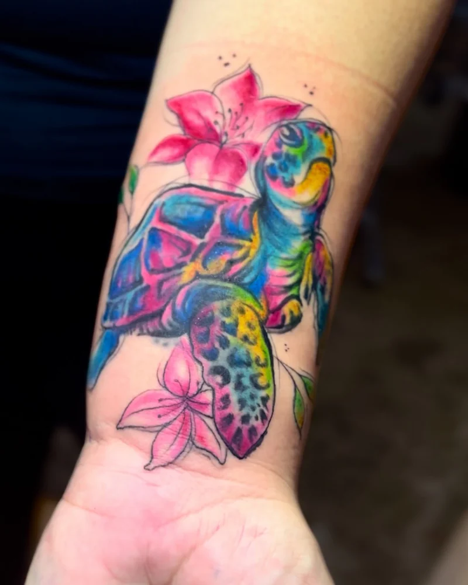
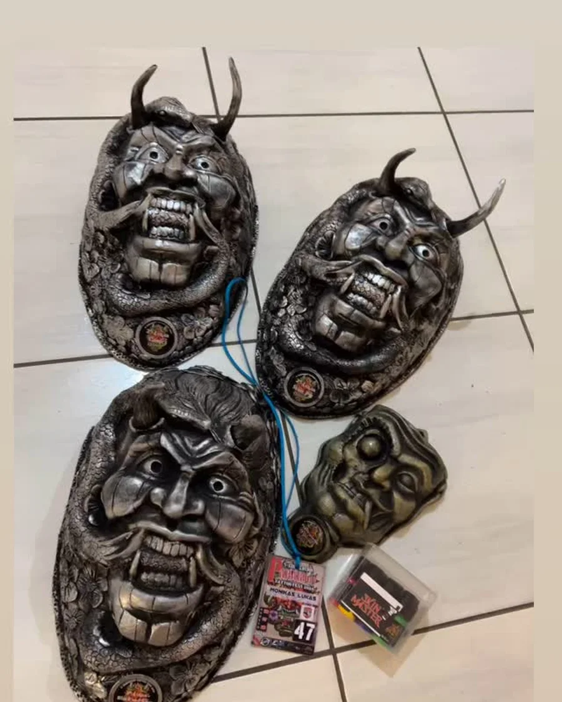
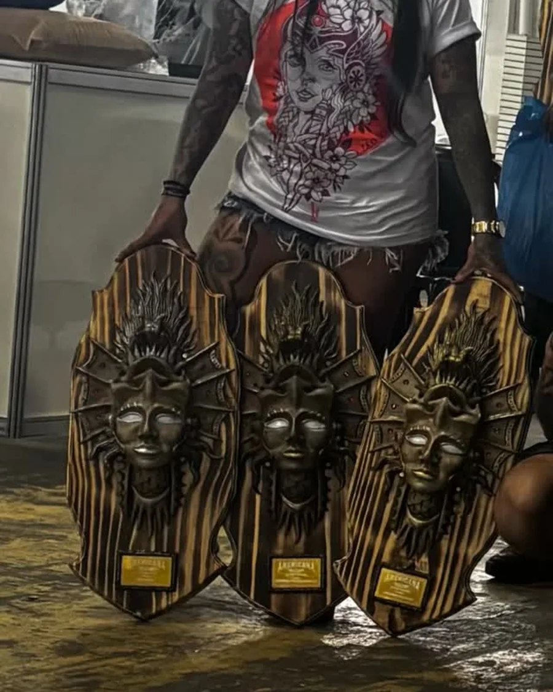
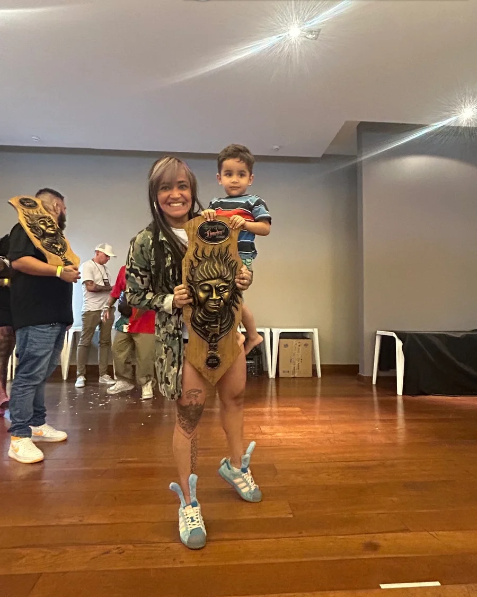
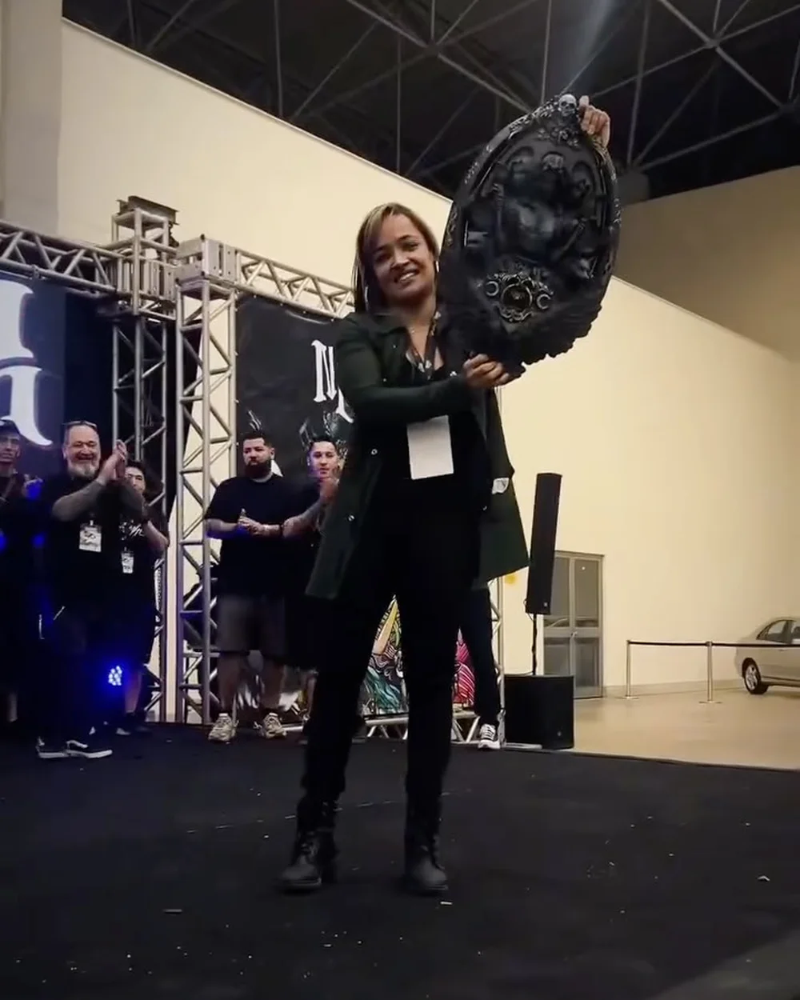

Trabalhos
Preto e cinza, cor, fechamentos e os desenhos em papel. Toque numa peça para ver em tamanho grande.

Sem decalque
No free hand, o desenho nasce na pele. A Mônika risca com caneta em cima do corpo, acompanhando o músculo e o movimento, e tatua a partir desse risco.
Feito no corpo
O desenho é montado no local, no tamanho e no formato de quem vai usar.
Peça única
Sem decalque, nenhum desenho sai igual a outro.
Cobertura
O risco já nasce pensando na tatuagem antiga que vai sumir por baixo.
Oito anos de estudo
Desde 2018 lapidando o estilo, no papel e na pele.


Mais de 40 prêmios
Desde 2018 em convenções pelo Brasil e no Paraguai, competindo e também como jurada.



- Master Ink 2026Juiz de Fora · 1º lugar Free Machine, categoria X-13
- Americana Tattoo FestivalMelhor série de desenho colorida
- Campinas Tattoo Extreme1º lugar Free Hand
- Old West Tattoo Convention2º lugar Free Hand
- 8º Tattoo RockAraras · categoria Free Hand
- JuradaEspecialista em free hand em convenções

Sobre a Mônika
Mônika Lukas tatua em free hand desde 2018, no centro de Araras, interior de São Paulo.
Levou mais de oito anos para construir o próprio estilo: realismo em preto e cinza, cor viva, personagens de terror e de desenho animado, sempre riscados direto na pele. No tempo livre, desenha a carvão e a caneta.
Já soma mais de 40 prêmios em convenções e faz parte do pro team da X-13 Machine.
“Em tudo dai-vos graça.”
Ver o InstagramEstúdio
Centro de Araras, SP. Atendimento com hora marcada.
- Onde
- Centro · Araras, SP
- Orçamentos
- (19) 99841-3437
- @monikalukastattoo
Pedir orçamento
O pedido chega pronto no WhatsApp da Mônika, com tudo o que ela precisa para responder.
A ideia
Conte o tema ou mande uma referência.
O local
Diga em que parte do corpo vai ficar.
O tamanho
Pequena, média, grande ou fechamento.
A foto
Na conversa, mande a referência e uma foto do local.